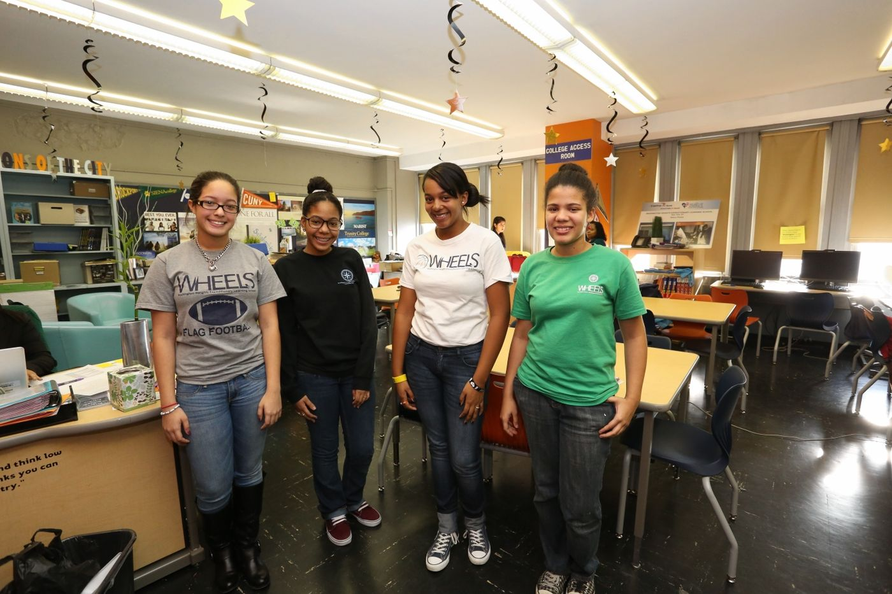
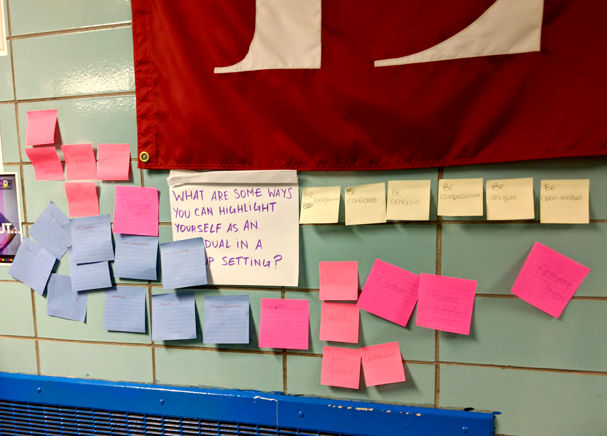
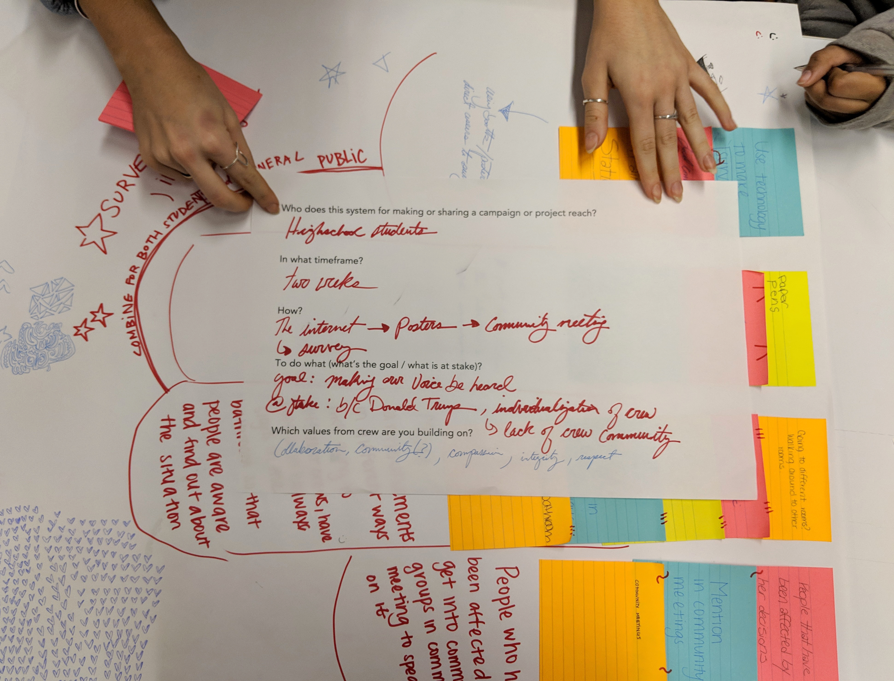
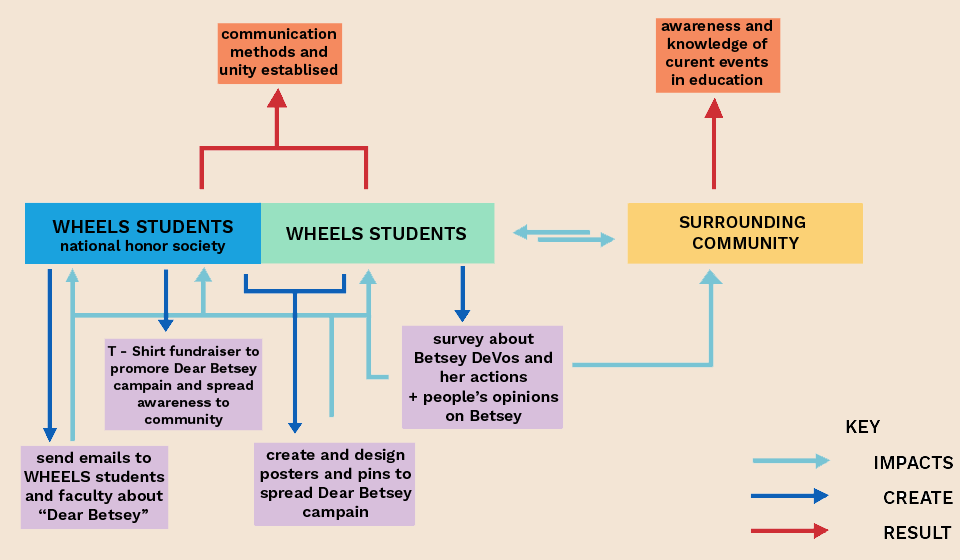

The system put in place by WHEELS created separation and little communication methods among individual crews. I worked on a team with other college students, and student and faculty from Washington Heights Expeditionary Learning School (WHEELS) to create a communication system within "crew" to facilitate the flow of information and ideas.
Crew is a student support system consisting of a group of 5 to 7 students and a teacher. Crew provides homework help, college application aids, and a general safe space for students to feel welcomed and accepted.

We worked closely with the student and faculty at WHEELS to discover the values, goals, and needs of crew and WHEELS. Through participatory research and collaboration, we were able to discover that the crew program needed faster and effcient communication among crews, school administration, and local communities.
  
To test run our new system, the students created a campaign titled Dear Betsy. Students all designed and wrote postcards to the secretary of education, Betsey DeVos, to voice their opinions on a variety of issues such as guns in schools, facilities and their conditions, and much more.